LabVIEW VI Comparison Report
7/13/2026 7:49:41 PM
First VI: C:\workspace-base\Theme\Set picture background.viSecond VI: C:\workspace\Theme\Set picture background.vi
| Front Panel Overview | ||
|
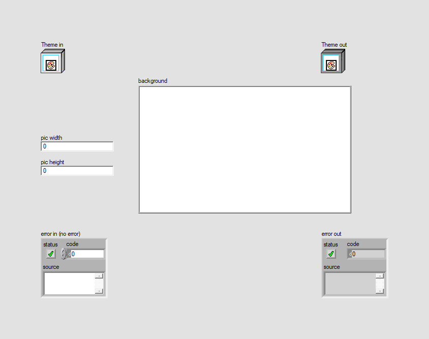 |
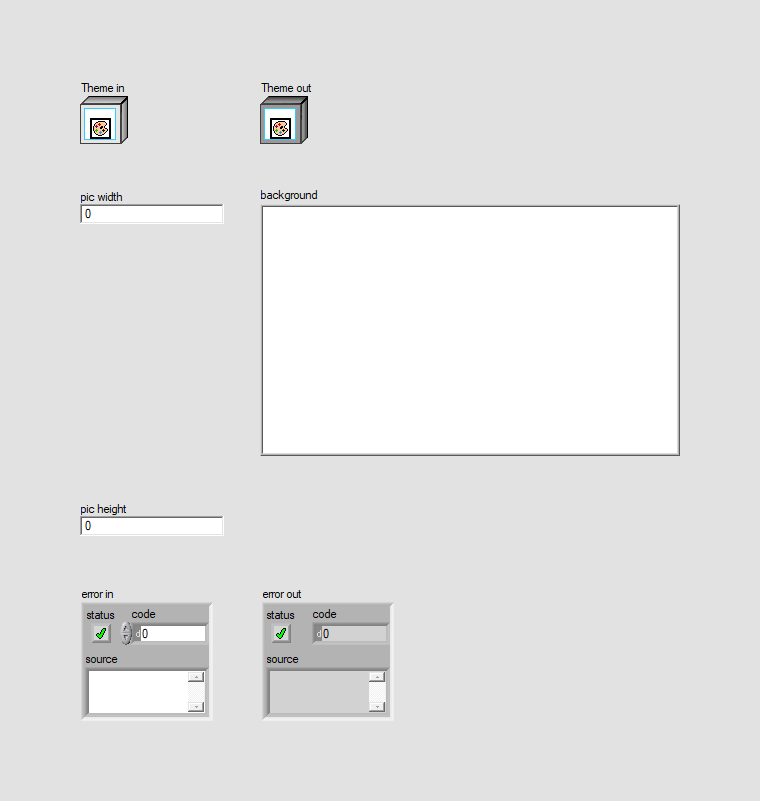 | |
| Block Diagram Overview | ||
|
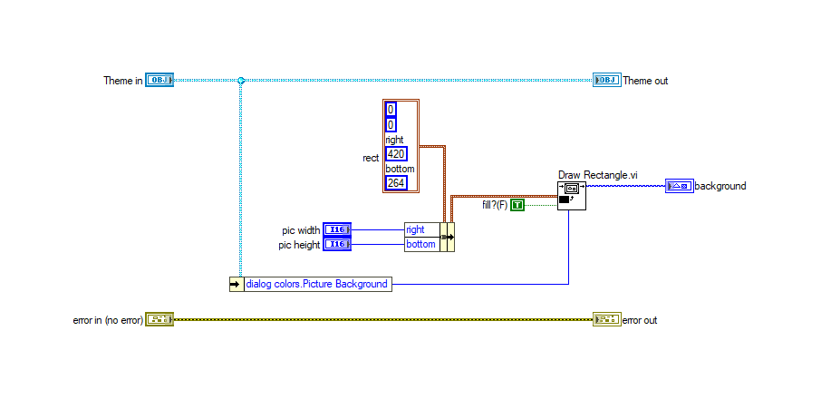 |
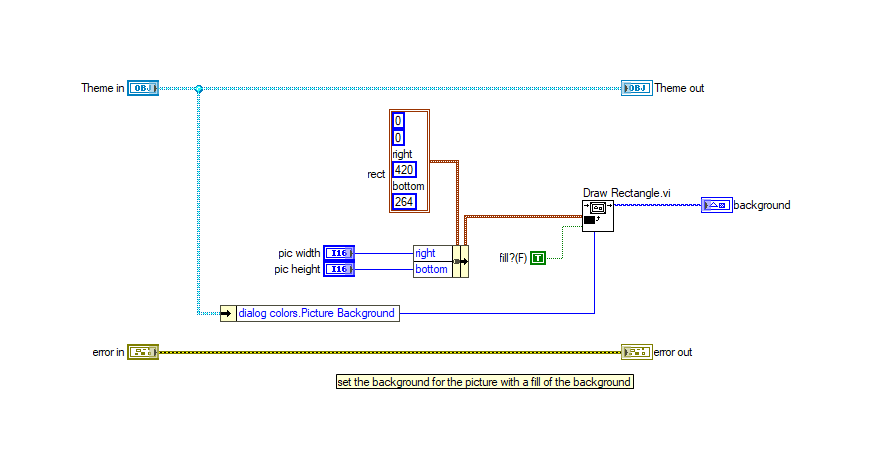 |
- Front Panel
- Front Panel Position/Size
- Block Diagram Functional
- Block Diagram Cosmetic
- VI Attribute
Detailed Information
1. Block Diagram objects
| C:\workspace-base\Theme\Set picture background.vi | C:\workspace\Theme\Set picture background.vi | |
|
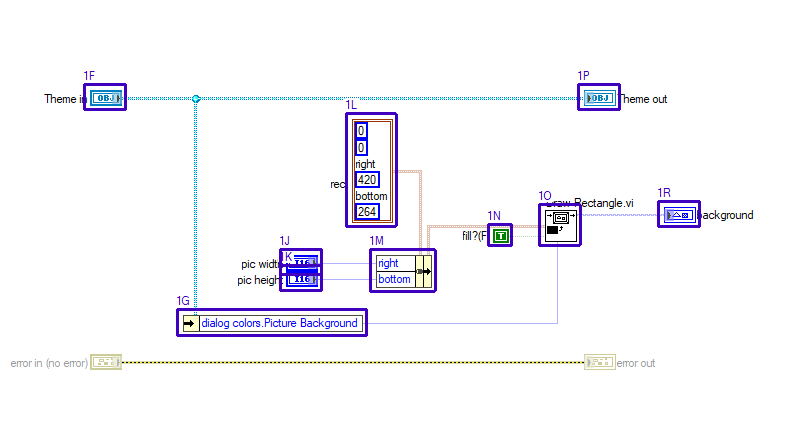 |
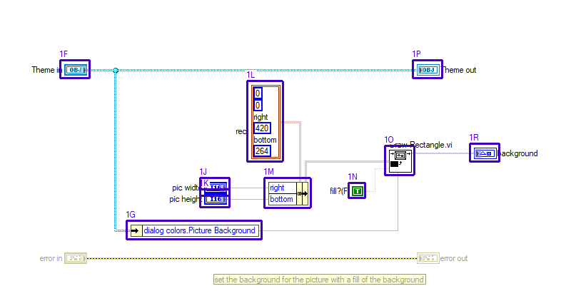 |
- Numeric Constant "left" - moved : changed from "(3,3)" to "(3,3)"
- Numeric Constant "top" - moved : changed from "(3,20)" to "(3,20)"
- Numeric Constant "right" - moved : changed from "(3,52)" to "(3,52)"
- Numeric Constant "bottom" - moved : changed from "(3,84)" to "(3,84)"
- Name Label - moved : changed from "(183,392)" to "(16,10)"
- Front Panel Terminal "Theme in" - moved : changed from "(230,391)" to "(63,10)"
- Unbundle By Name "Unbundle By Name" - moved : changed from "(323,616)" to "(156,235)"
- Name Label - moved : changed from "(377,573)" to "(210,191)"
- Name Label - moved : changed from "(381,557)" to "(214,175)"
- Front Panel Terminal "pic width" - moved : changed from "(426,556)" to "(259,175)"
- Front Panel Terminal "pic height" - moved : changed from "(426,572)" to "(259,191)"
- Cluster Constant "rect" - moved : changed from "(492,420)" to "(325,39)"
- Bundle By Name "Bundle By Name" - moved : changed from "(516,556)" to "(349,175)"
- Boolean Constant "fill?(F)" - moved : changed from "(633,530)" to "(466,181)"
- SubVI "Draw Rectangle.vi" - moved : changed from "(685,511)" to "(518,130)"
- Front Panel Terminal "Theme out" - moved : changed from "(724,391)" to "(557,10)"
- Name Label - moved : changed from "(756,392)" to "(589,10)"
- Front Panel Terminal "background" - moved : changed from "(804,508)" to "(637,127)"
2. Block Diagram objects
| C:\workspace-base\Theme\Set picture background.vi | C:\workspace\Theme\Set picture background.vi | |
|
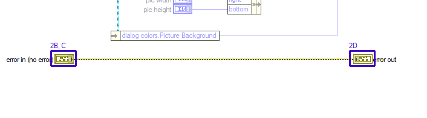 |
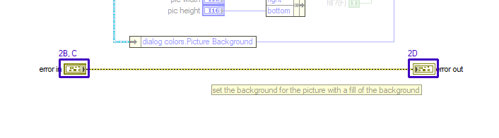 |
- Name Label - moved : changed from "(150,656)" to "(28,274)"
- Front Panel Terminal "error in" - data type name : changed from "error in (no error)" to "error in"
- Front Panel Terminal "error in" - moved : changed from "(230,655)" to "(63,274)"
- Front Panel Terminal "error out" - moved : changed from "(724,655)" to "(557,274)"
- Name Label - moved : changed from "(756,656)" to "(589,274)"
3. Block Diagram objects
| C:\workspace-base\Theme\Set picture background.vi | C:\workspace\Theme\Set picture background.vi | |
|
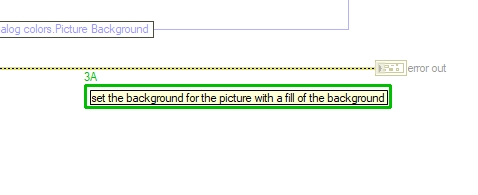 |
- Label - added at (272,304)
4. Front Panel - Panel
| C:\workspace-base\Theme\Set picture background.vi | C:\workspace\Theme\Set picture background.vi | |
|
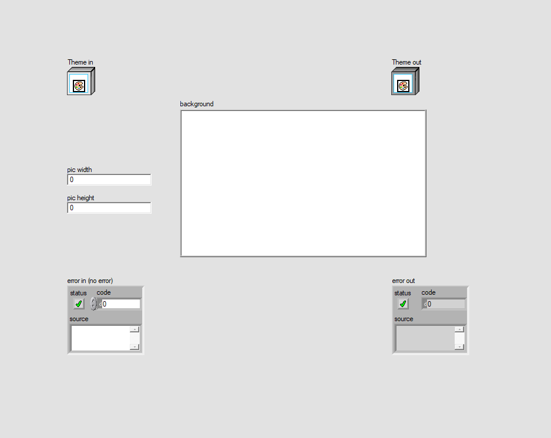 |
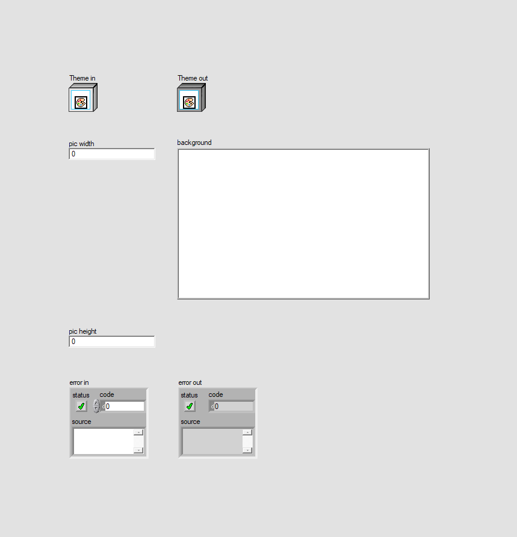 |
- Panel - panel size
5. Front Panel - LabVIEW Object
| C:\workspace-base\Theme\Set picture background.vi | C:\workspace\Theme\Set picture background.vi | |

|
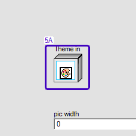 |
- LabVIEW Object "Theme in" - moved : changed from "(24,24)" to "(24,48)"
6. Front Panel - Numeric
| C:\workspace-base\Theme\Set picture background.vi | C:\workspace\Theme\Set picture background.vi | |
|
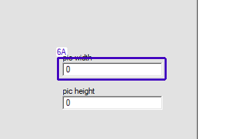 |
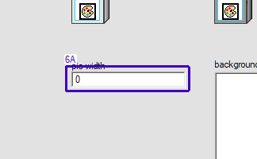 |
- Numeric "pic width" - moved : changed from "(24,206)" to "(24,156)"
7. Front Panel - Numeric
| C:\workspace-base\Theme\Set picture background.vi | C:\workspace\Theme\Set picture background.vi | |
|
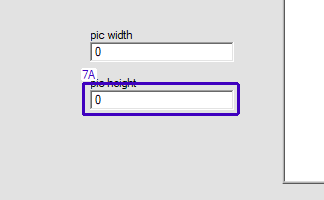 |
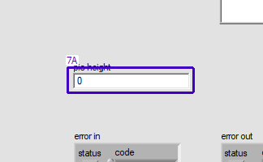 |
- Numeric "pic height" - moved : changed from "(24,254)" to "(24,468)"
8. Front Panel - Cluster
| C:\workspace-base\Theme\Set picture background.vi | C:\workspace\Theme\Set picture background.vi | |
|
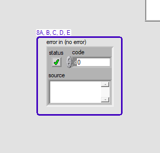 |
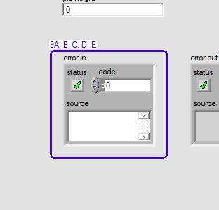 |
- String "source" - moved : changed from "(16,486)" to "(16,486)"
- Boolean "status" - moved : changed from "(22,442)" to "(22,442)"
- Cluster "error in" - data type name : changed from "error in (no error)" to "error in"
- Cluster "error in" - moved : changed from "(24,396)" to "(25,554)"
- Numeric "code" - moved : changed from "(62,441)" to "(62,441)"
9. Front Panel - LabVIEW Object
| C:\workspace-base\Theme\Set picture background.vi | C:\workspace\Theme\Set picture background.vi | |
|
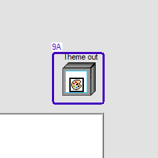 |
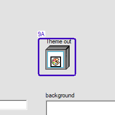 |
- LabVIEW Object "Theme out" - moved : changed from "(576,24)" to "(204,48)"
10. Front Panel - 2D Picture
| C:\workspace-base\Theme\Set picture background.vi | C:\workspace\Theme\Set picture background.vi | |
|
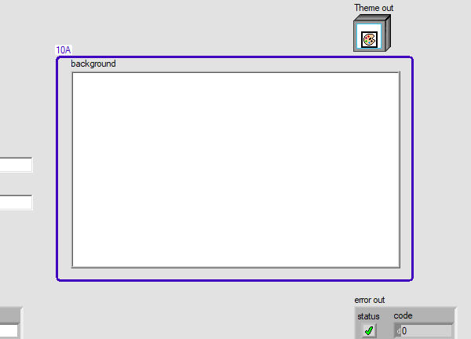 |
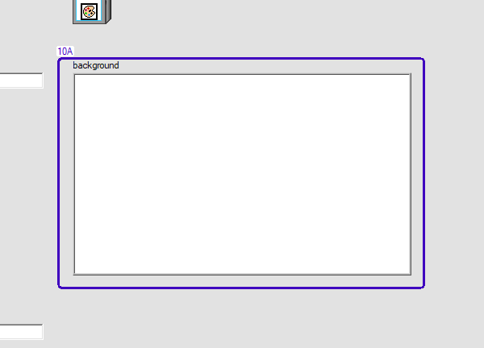 |
- 2D Picture "background" - moved : changed from "(216,96)" to "(204,156)"
11. Front Panel - Cluster
| C:\workspace-base\Theme\Set picture background.vi | C:\workspace\Theme\Set picture background.vi | |
|
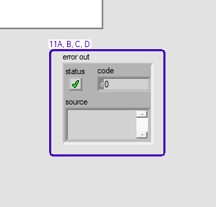 |
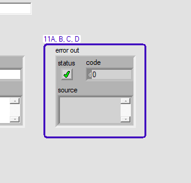 |
- Cluster "error out" - moved : changed from "(577,396)" to "(206,554)"
- String "source" - moved : changed from "(292,486)" to "(292,486)"
- Boolean "status" - moved : changed from "(297,442)" to "(297,442)"
- Numeric "code" - moved : changed from "(338,441)" to "(338,441)"
12. VI Attribute - Documentation (VI Properties)
- description text : changed from "Set the background of a picture to the specified color Code Developed By: Technology Service Corporation 1983 S Liberty Drive Bloomington, IN 47403 Phone: 812 558-7100 www.tsc.com/atcs Developer: Daniel Coons" to "Set the background of a picture to the specified color Code Developed By: + Daniel Coons + https://github.com/danielcoons/tsc-pop-up"
13. VI Attribute - Execution (VI Properties)
- Allow Debugging : changed from "enabled" to "disabled"